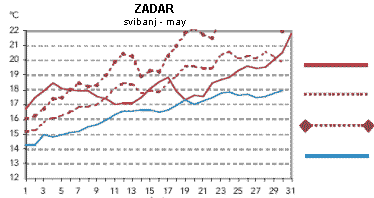

Klimatski uvjeti
Klima je u ovom području tipično mediteranska, s time da se ljeti osjeća utjecaj plitkog mora Pašmanskog kanala. Višegodišnji prosjek pokazuje da temperatura mora dostigne 20°C već sredinom svibnja tako da sezona kupanja počinje već u svibnju, a u lipanj se tradicionalno ulazi sa temperaturama mora koje su više nego dovoljne za kupanje. Sezona kupanja je vrlo duga i traje negdje od polovice svibnja do listopada.
Nažalost ta činjenica je slabo poznata a ljudi teško mijenjaju stare navike, tako da relativno mali broj gostiju koristi prednosti predsezone i posezone (manja gužva, niže cijene) za svoj godišnji odmor. Isprekidane linije na slici prikazuju višegodišnje svibanjske srednje temperature mora u Zadru (izvor DHMZ). U lipnju se temperature mora uopće ne spuštaju ispod 21°C, a nekad se popnu i do 25°C. Osim toga, more u Turnju je izrazito čisto zbog rijetkog prirodnog fenomena - morske struje koja periodično mijenja smjer.
|  |
|
| | | | | | | srednja dnevna temp. |
| | | višegodišnji srednjak + s | | |
| višegodišnji srednjak + 2s | | | | višegodišnji srednjak |
| | | |
Temperature zraka su također visoke, ali u ljetnim mjesecima ugodan boravak na visokim temperaturama omogućava ugodan maestral koji svakog dana s mora donosi svježi zrak i smanjuje osjećaj vrućine karakterističan za kontinentalne krajeve. Iako ljetne temperature danju dosežu i 30°C na moru se to puno lakše podnosi. Naravno, osim maestrala za podnošenje vrućine pomaže izležavanje u hladovini i kupanje.
Ljetna klima je za turiste idealna i kišna ljeta su relativno rijetka, tako da je skoro nemoguće pogriješiti s izborom termina ljetovanja. Ali najčešće kiša uopće ne padne od svibnja pa sve do srpnja, uz poneku iznimku u vidu kratkih noćnih neverina. Inače, ti neverini su doživljaj za sebe i oni koji su ih doživjeli uvijek se nadaju da će ih opet vidjeti kad budu na moru. Obično dođu vrlo brzo uz grmljavinu i toplu kišu i tako naelektriziraju zrak da se ugođaj potpuno promijeni, na zadovoljstvo onih koji se tamo nađu sa svojom boljom polovicom.
|